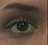

1 · Optical flow
Estimate motion at many image locations between a pair of nearby frames.
Output: a field of frame-to-frame motion vectors. Persistent identity across a long sequence is not the main output.
All three panels use the same synthetic translation of the same face. The demo separates what is estimated (optical flow vs. a feature trajectory) from how a local displacement can be estimated (Lucas–Kanade alignment).
Estimate motion at many image locations between a pair of nearby frames.
Choose a distinctive image feature and follow the same feature over multiple frames.
A local alignment method: start near the previous position and estimate a small displacement Δp.
